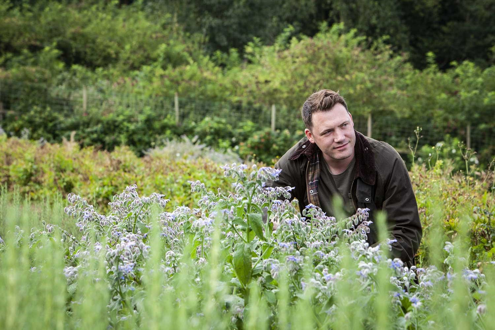
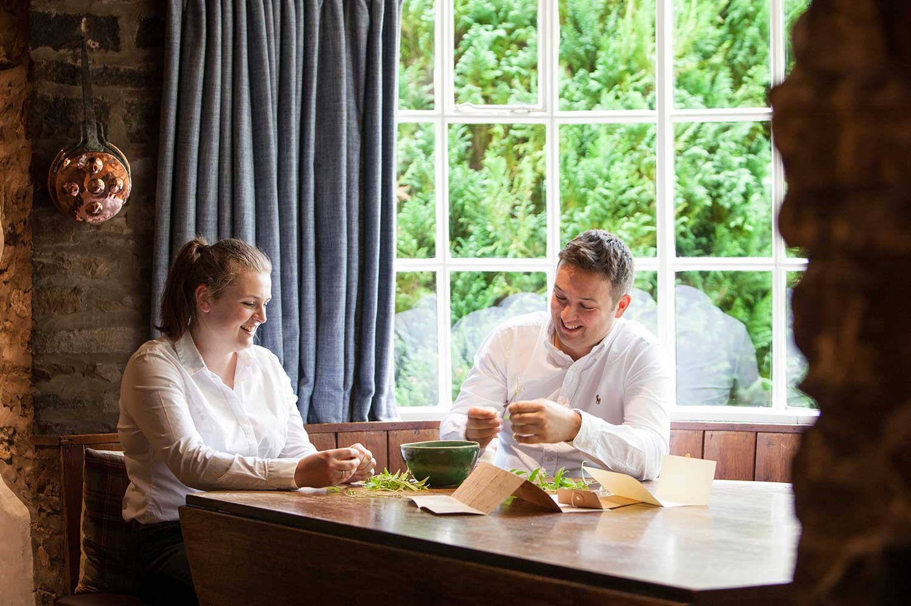
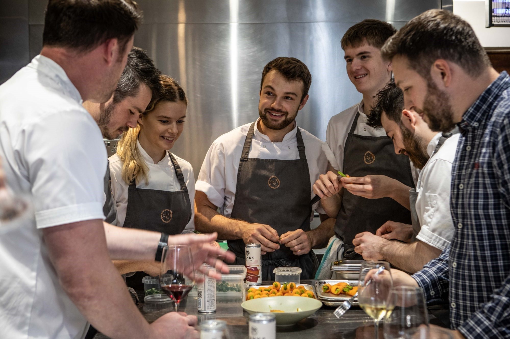

More than just a Michelin-starred restaurant with rooms

Homegrown Creativity
Chef Tommy Banks’ talent is in itself truly remarkable. He was Britain’s youngest Michelin-starred chef in
2013 and won Great British Menu in 2016 and 2017. The Michelin-starred Black Swan was awarded ‘Best
Restaurant in the UK 2018’ by The Food and Travel Magazine, as well ‘Best Fine Dining Restaurant in the
World’ in 2017 and, more recently, ‘UK’s Best Fine Dining Restaurant’ in 2020 by TripAdvisor.
“I see the Black Swan as a co-operative of minds. We have great people working here; some real
characters
with tremendous talent and it’s their coming together that creates something special. We want our guests
to
feel part of it and experience it with us. It’s not just a job for us, it’s a lifestyle”
- Tommy Banks

Informal Hospitality
During your stay you will meet many of our staff. Both the kitchen and front-of-house teams spend many hours
working outside; they really understand what the food is and why it’s on the plate; they can tell you the
whole story from start to finish.
“I like to think that we have brushed aside much of the formality normally associated with fine dining;
for
us it’s about our guests having fun; so it’s good food, good service and a good time”
- Anne Banks

Something unique
“We’re lucky to have such a creative team. Growing and foraging so much ourselves really gives us an
edge
and a chance to do things differently. Guests get something unique to us; our personality, our place and
our
ideas.”